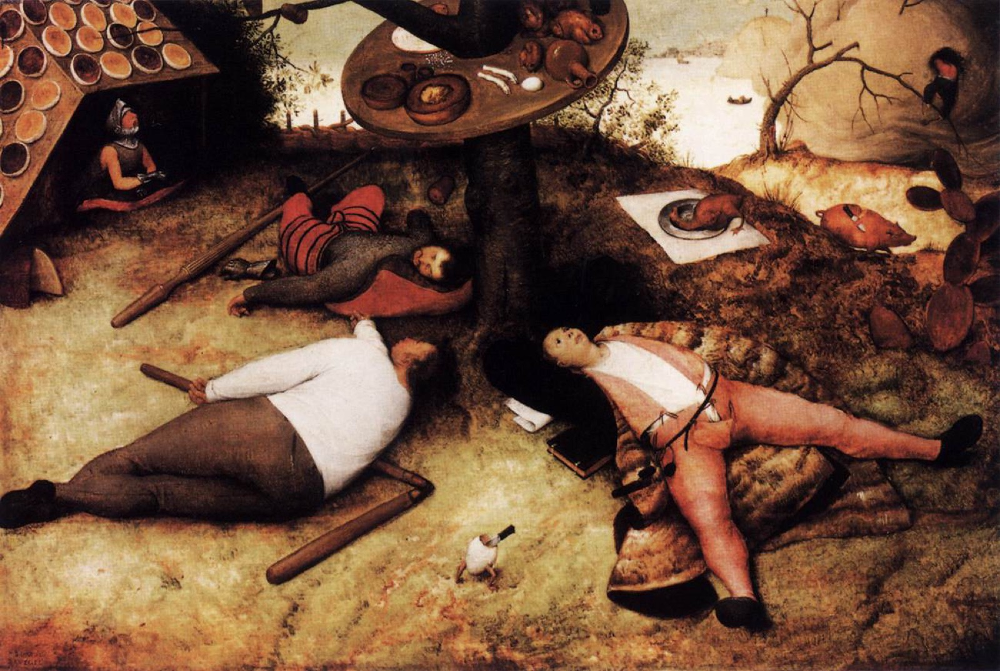

tiryak
the animal realm
"He is intoxicated with his safe, self-contained, familiar world and so fixes his attention on familiar goals and pursues them with unswerving and stubborn determination." — Chögyam Trungpa, Cutting Through Spiritual Materialism

the shape of the trap
The animal realm is associated with stupidity: that is, preferring to play deaf and dumb, preferring to follow the rules of available games rather than redefine them.
— Chögyam Trungpa, The Myth of Freedom
… the animal realm concerned with territory, danger and the desire to settle into a comfortable lazy stupor …
— Martin Lowenthal & Lar Short, Opening the Heart of Compassion
There aren't possibilities in the animal realm because there is not enough awareness operating or not enough attention.
— Ken McLeod, Then and Now
The wild animals that share our human world, in particular, live in constant fear. They cannot eat a single mouthful of food without being on their guard.
— Patrul Rinpoche, The Words of My Perfect Teacher
texture
novel
Animal Farm — George Orwell
I will work harder!
— Boxer
poem
Toads — Philip Larkin
Why should I let the toad work Squat on my life? Can't I use my wit as a pitchfork And drive the brute off?
— The Less Deceived, 1955
film
Groundhog Day — dir. Harold Ramis, 1993
What would you do if you were stuck in one place, and every day was exactly the same, and nothing that you did mattered?
— Phil Connors
song
Once in a Lifetime — Talking Heads, 1980
essay
The Myth of Sisyphus — Albert Camus
The struggle itself toward the heights is enough to fill a man's heart. One must imagine Sisyphus happy.
— trans. Justin O'Brien
dispatches
Via the community archive.
In the ____ realm, this ____ is mine, I am this ____. … animal → safety
these are more conceptual and the animal realm is pretty low on concepts, predation and spatial threats are perceived and reacted to but not with much conceptual thought.
Anger at anger is quite characteristic of the Hell Realm. Anger at distraction is characteristic of the Titan Realm. Distraction is characteristic of the Animal Realm.
the door
Your great mistake is to act the drama as if you were alone.
— David Whyte, Everything is Waiting for You
Heedfulness is the path to the Deathless. Heedlessness is the path to death.
— Dhammapada, verse 21 (trans. Buddharakkhita)
The wisdom of comfort and hospitality as enabling things that would otherwise be impossible (like practice!), and the joy of providing safety for others, and an awareness of space resides in the animal realm.
even here, a buddha
In the animal realm the awakened one is called Steadfast Lion, and he carries a book — a symbol, a concept, a window out of the immediate.
The gates are not locked.
☸ the six realms · may all beings be free